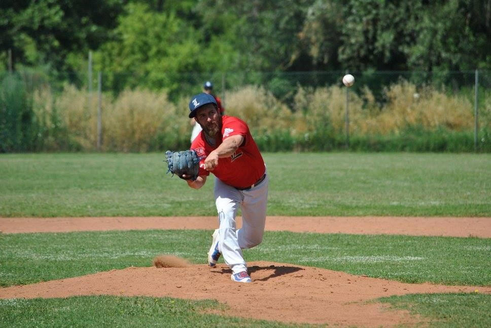

Finalmente è arrivata l’estate anche per i Lancers che riescono nella difficilissima impresa di giocare per ben due fine settimana consecutivi.
La pioggia ha lasciato il posto a temperature decisamente più estive, i 10/15 gradi in più si sono fatti sentire a Nettuno come a Lastra a Signa questa domenica-
Due fine settimana molto simili tra loro, in entrambi i casi si sono viste prestazioni altalenanti della formazione guidata da Gentilini.
Partiamo dalle sconfitte, entrambe sono arrivate in gara 2 sintomo che subiamo ancora la mancanza di lucidità fisica e mentale del doppio incontro.
A Nettuno nonostante una partenza sprint (due punti al primo e tre al secondo inning) i Lancers i sono fatti recuperare al secondo a causa di qualche sbavature di troppo in fase difensiva condita da un paio di battute valide.
Il Nettuno ha poi messo la freccia del sorpasso e chiuso la gara al settimo su Pistol che aveva rilevato il partente, Ciappi.
Contro il Livorno non siamo mai entrati in partita, due primi inning decisamente sotto tono in difesa hanno fatto scendere anzitempo Ciappi, designato ancora una volta come partente dell’incontro.
Qualche segnale di ripresa verso il finale di gara che però ha poco impensierito la squadra labronica sorretta da un Nencini in ottima forma.
Passiamo alle vittorie…
Gara 1 a Nettuno è stata caratterizzata da un attacco consistente che ha prodotto ben 16 punti subendo la miseria di 2 segnature dei padroni di casa, ottime le prove di Nannucci, Ciappi e Baratella in battuta e del duo Vannini-Vannuzzi sul monte.
Contro il Livorno, invece, il primo incontro è stato caratterizzato dalla maiuscola prestazione di Vannini sul monte per nove riprese sorretto da una difesa pressoché perfetta e da un attacco cinico che ha toccato nei momenti decisivi del match, in questo caso si sono fatti sentire con le loro mazze Parrini, Nannucci e Albano.
Il prossimo impegno è previsto per domenica 3 Luglio in Sardegna, ospiti dei Los Amigos di Olmedo, attualmente il team sardo occupa la tera posizione in classifica con 7 vittorie e 8 sconfitte.